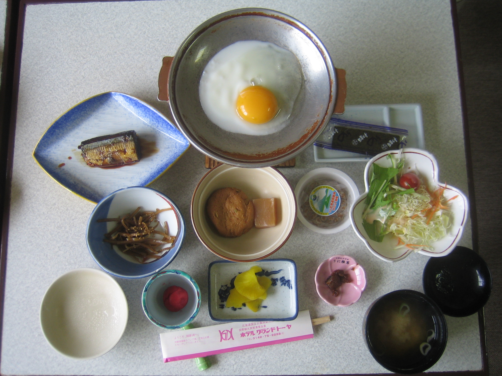
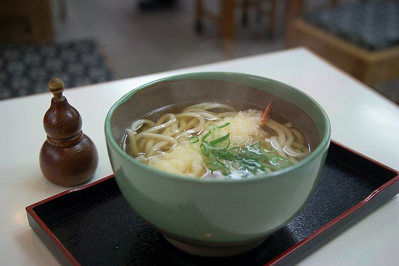
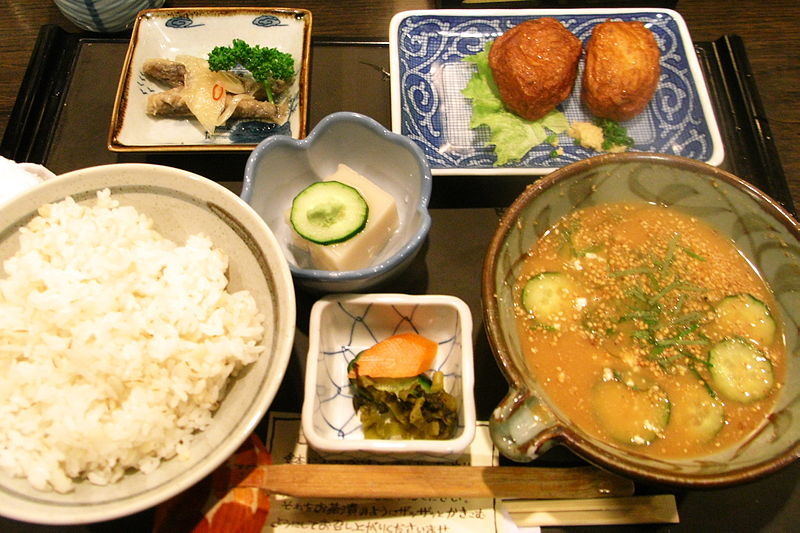

Apart from rice, staples in Japanese cuisine include noodles, such as soba and udon. Japan has many simmered dishes such as fish products in broth called oden, or beef in sukiyaki and nikujaga. Foreign food, in particular Chinese food in the form of noodles in soup called ramen and fried dumplings, gyoza, and western food such as curry and hamburger steaks are commonly found in Japan. Historically, the Japanese shunned meat, but with the modernization of Japan in the 1860s, meat-based dishes such as tonkatsu became more common.
Japan Foods
Enjoy the food you want!
List of Japanese dishes


